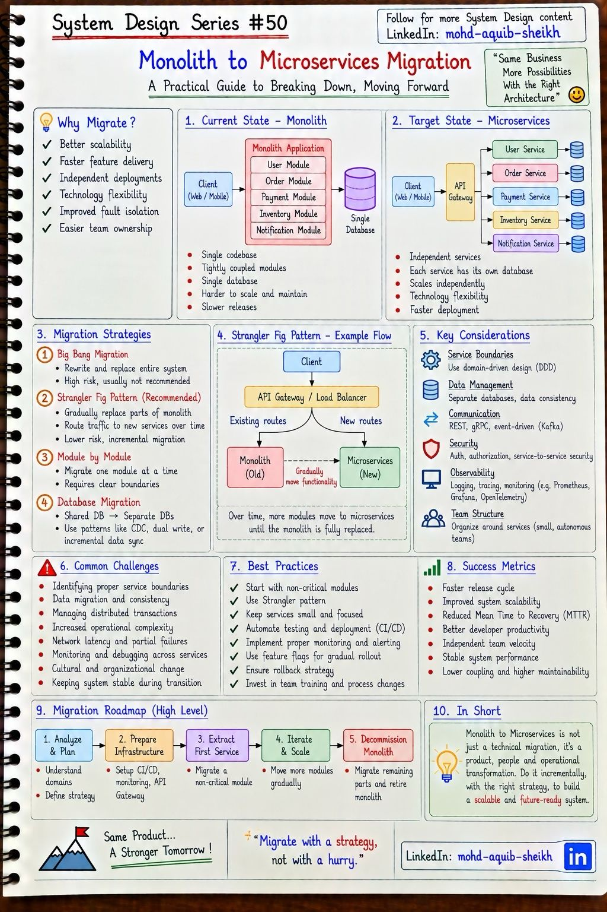
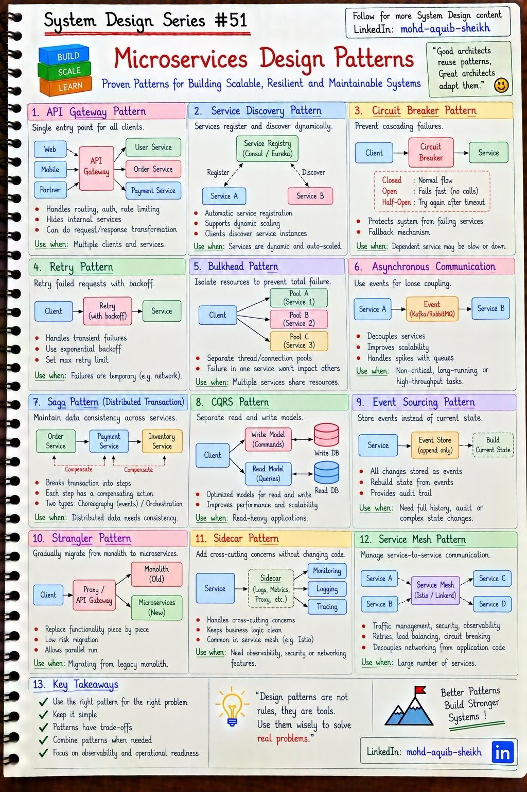
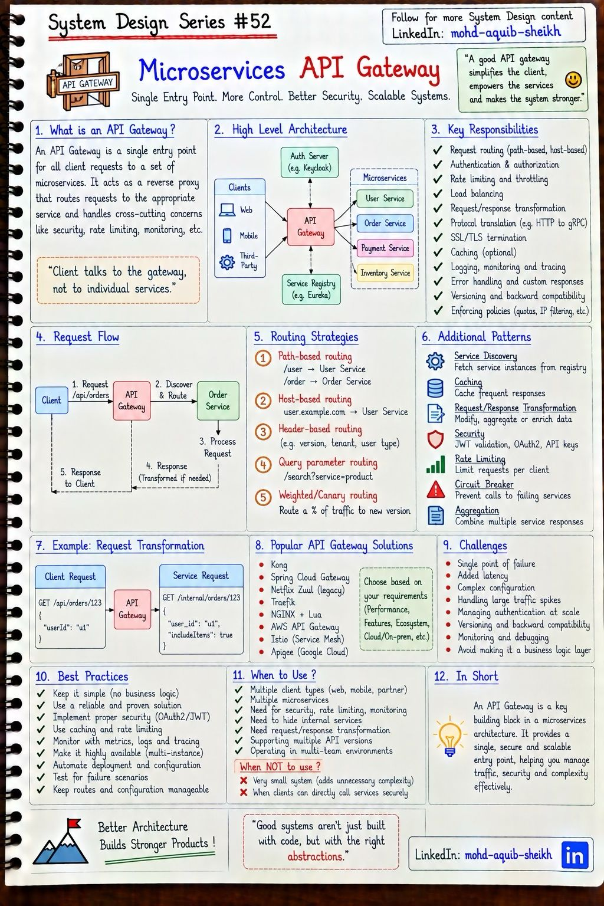
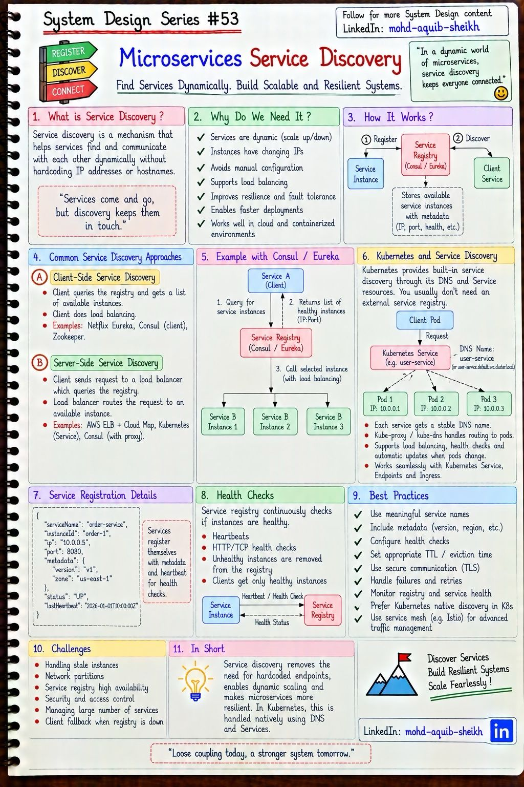

Микросервисы
Завершающая глава собирает предыдущие в архитектурный стиль. Как и зачем делить монолит, какие шаблоны решают проблемы, которые это деление создаёт, как устроена единая точка входа и как сервисы находят друг друга, когда их адреса постоянно меняются.
15.1От монолита к микросервисам#50
Монолит — одно приложение с общей кодовой базой и одной базой данных. Микросервисы — набор независимо развёртываемых сервисов, каждый со своими данными. Переход — не техническая модернизация, а изменение того, как команды владеют кодом и выпускают его.


| Стратегия | Суть | Оценка |
|---|---|---|
| Big Bang | Переписать всё и переключиться разом | Высокий риск; обычно заканчивается двумя системами, которые нужно поддерживать |
| Strangler Fig | Перед монолитом ставится прокси или шлюз; функции по одной переносятся в новые сервисы, маршруты переключаются | Рекомендуемый путь: каждый шаг мал и обратим |
| Модуль за модулем | Выделять по одному модулю с чёткими границами | По сути — порядок действий внутри Strangler Fig |
| Миграция базы данных | Общая база → отдельные базы сервисов (CDC, двойная запись, поэтапная синхронизация) | Самая трудная часть любой миграции |
- Раздел «Why migrate» перечисляет выгоды, но не цену. Сетевые вызовы вместо вызовов методов, распределённые транзакции вместо локальных, десятки конвейеров развёртывания, трассировка вместо стека вызовов. Микросервисы решают проблему организационного масштаба — много команд мешают друг другу в одной кодовой базе. Команде из пяти человек они чаще вредят.
- Модульный монолит — промежуточный вариант, который часто оказывается конечным: одно развёртывание, но строгие границы модулей и раздельные схемы данных. Даёт большую часть пользы от разделения без распределённости, а если понадобится — модуль легко вынести.
- Распределённый монолит — худший из миров: сервисы физически отдельные, но делят базу или обязаны выпускаться одновременно. Признак — изменение одного сервиса требует изменения трёх других.
Разделение данных
Пока сервисы читают таблицы друг друга, они не независимы: изменить схему нельзя, не сломав соседа. Правило «у каждого сервиса своя база» означает, что чужие данные доступны только через API или события. Отсюда следуют два вопроса, на которые отвечают шаблоны следующего раздела: как выполнить операцию, затрагивающую несколько сервисов (Saga), и как получить данные нескольких сервисов одним запросом (API composition, CQRS).
Границы сервисов проводят по бизнес-областям (bounded context из DDD), а не по техническим слоям и не по сущностям. Хороший тест: большинство изменений требований затрагивает один сервис.
15.2Шаблоны проектирования микросервисов#51
Двенадцать шаблонов с конспекта делятся на четыре группы по проблеме, которую решают.


| Группа | Шаблон | Проблема → решение |
|---|---|---|
| Вход и связь | API Gateway | Клиенту не нужно знать о десятках сервисов → единая точка входа (15.3) |
| Service Discovery | Адреса экземпляров меняются → реестр (15.4) | |
| Async Communication | Синхронные цепочки хрупки → события через брокер (тема 12) | |
| Устойчивость | Circuit Breaker | Зависший сервис тянет за собой вызывающих → быстрый отказ вместо ожидания |
| Retry | Временные сбои → повтор с растущей паузой | |
| Bulkhead | Одна медленная зависимость занимает все потоки → раздельные пулы ресурсов | |
| Данные | Saga | Нет транзакции между сервисами → цепочка локальных транзакций с компенсациями |
| CQRS | Чтение и запись требуют разных моделей → раздельные модели | |
| Event Sourcing | Нужна полная история → хранить события, состояние вычислять | |
| Инфраструктура | Strangler | Миграция с монолита (15.1) |
| Sidecar | Сквозные функции без изменения кода → вспомогательный контейнер рядом с сервисом | |
| Service Mesh | Sidecar у каждого сервиса + управление: mTLS, маршрутизация, метрики (Istio, Linkerd) |
Устойчивость: три шаблона работают вместе
Circuit Breaker
Closed — вызовы проходят, ошибки считаются. Open — порог превышен: вызовы сразу отклоняются, зависимость получает время на восстановление. Half-open — после паузы пропускается несколько пробных вызовов; успех закрывает цепь.
Retry
Только для временных ошибок и только для идемпотентных операций. Пауза растёт экспоненциально и содержит случайную добавку (jitter), иначе все клиенты повторят одновременно. Число попыток ограничено.
Bulkhead
«Переборки» корабля: у каждой зависимости свой пул потоков или соединений. Медленный сервис отчётов исчерпает свой пул и не затронет оплату.
- Таймаут — первый шаблон устойчивости, без которого остальные не работают: вызов без таймаута держит поток бесконечно, и circuit breaker не узнает об ошибке.
- Повторы умножаются по цепочке. Три уровня сервисов по три попытки — 27 запросов к нижнему сервису на один запрос пользователя, причём в момент, когда он и так перегружен. Повторяйте на одном уровне, ограничивайте долю повторов (retry budget) и ставьте circuit breaker.
@CircuitBreaker, @Retry, @Bulkhead, @TimeLimiter; в service mesh — на уровне sidecar без изменения кода (тогда не дублируйте повторы в приложении).
Данные: Saga
Оформление заказа затрагивает сервисы заказов, оплаты и склада; общей транзакции нет. Saga разбивает операцию на локальные транзакции, и для каждого шага определено компенсирующее действие, отменяющее его по смыслу: «списать деньги» ↔ «вернуть деньги».
Хореография
- Сервисы реагируют на события друг друга.
- Нет центрального звена.
- Хороша для 2–3 шагов.
- При росте логика процесса размазана по сервисам, и её трудно увидеть целиком.
Оркестрация
- Отдельный компонент управляет шагами и компенсациями.
- Процесс описан в одном месте, виден его статус.
- Хороша для длинных и ветвящихся процессов.
- Инструменты: Temporal, Camunda, собственный конечный автомат.
PENDING), а компенсации делают идемпотентными и всегда выполнимыми. Каждый шаг публикует событие через outbox (тема 14), иначе сага оборвётся на двойной записи.
CQRS разделяет модель записи (нормализованная, проверяет инварианты) и модель чтения (денормализованная, подготовленная под экраны). Модель чтения обновляется событиями — значит, отстаёт на доли секунды, и интерфейс должен это учитывать. Event Sourcing хранит не текущее состояние, а последовательность событий: полный аудит и возможность перестроить любую проекцию ценой заметной сложности (версионирование событий, снимки). CQRS без Event Sourcing — обычное и часто достаточное решение.
15.3API Gateway#52
Единая точка входа: клиент обращается к шлюзу, шлюз — к нужным сервисам. Он берёт на себя всё, что одинаково для всех сервисов и что неразумно повторять в каждом.


Обязанности
- Маршрутизация: по пути, хосту, заголовку, весу (canary).
- Проверка токена, грубая авторизация.
- Rate limiting и квоты.
- Завершение TLS, преобразование протоколов (HTTP ↔ gRPC).
- Преобразование и агрегация ответов.
- Логи, метрики, идентификатор трассировки.
Риски
- Единая точка отказа → несколько экземпляров за балансировщиком.
- Дополнительный сетевой переход и задержка.
- Узкое место для команд, если каждое изменение маршрута требует общего релиза.
- Соблазн перенести в него бизнес-логику.
Backend for Frontend (BFF) — вариант шаблона: отдельный шлюз под каждый тип клиента (веб, мобильное приложение, партнёры). Мобильному клиенту нужен один компактный ответ на экран, вебу — другой набор данных; общий шлюз превращается в компромисс, неудобный всем. BFF принадлежит команде клиента и меняется вместе с ним.
Решения: Spring Cloud Gateway (если стек — Java и нужна логика на коде), Kong и Traefik (универсальные), Envoy и Istio Gateway (вместе с service mesh), облачные управляемые шлюзы. Netflix Zuul, упомянутый на конспекте как legacy, в новых проектах не используют. Отличия шлюза от балансировщика — в теме 03.
15.4Service Discovery#53
Экземпляры сервисов появляются и исчезают: автомасштабирование, деплой, отказы. Их адреса нельзя записать в конфигурацию. Обнаружение сервисов — механизм, который по имени сервиса возвращает актуальные адреса здоровых экземпляров.


| Клиентское обнаружение | Серверное обнаружение | |
|---|---|---|
| Кто спрашивает реестр | Сам клиент | Балансировщик или платформа |
| Кто выбирает экземпляр | Клиент (балансировка в библиотеке) | Балансировщик |
| Плюс | Нет лишнего перехода; гибкие стратегии | Клиент ничего не знает о реестре — работает для любого языка |
| Минус | Логика нужна в каждом клиенте и на каждом языке | Дополнительный переход; балансировщик нужно резервировать |
| Примеры | Eureka + Spring Cloud LoadBalancer, Consul | Kubernetes Service, AWS ELB + Cloud Map |
Жизненный цикл: экземпляр при запуске регистрируется (имя, адрес, порт, метаданные) → периодически подтверждает, что жив (heartbeat), либо реестр сам его проверяет → при остановке снимается с регистрации; пропавший без снятия удаляется по таймауту.
user-service.default.svc.cluster.local) и виртуальный адрес; kube-proxy распределяет соединения по подам, прошедшим readiness-проверку. Отдельный реестр вроде Eureka в Kubernetes обычно не нужен — конспект говорит об этом прямо. Как это устроено на уровне сети — в «Компьютерных сетях», тема 13.
- Устаревшие записи. Между отказом экземпляра и его удалением из реестра проходит время; ещё дольше живёт кэш у клиентов. Часть запросов уйдёт на мёртвый адрес — нужны таймауты и повтор на другом экземпляре.
- Кэш DNS. JVM кэширует результаты разрешения имён, а соединения в пуле живут долго: сервис может продолжать ходить на адрес, которого уже нет. См. «Компьютерные сети», тема 08.
- Реестр недоступен. Клиент должен продолжать работать с последним известным списком, а не падать. Сам реестр — кластер из нескольких узлов.
- Долгоживущие соединения. Kubernetes Service балансирует соединения, а не запросы: gRPC-клиент, открывший одно HTTP/2-соединение, будет слать всё на один под. Решение — балансировка на стороне клиента или L7-прокси (service mesh).
15.5Интерактив: сага заказа и компенсации
15.6Самопроверка
Главный критерий, по которому монолит делят на сервисы?
- По техническим слоям: UI, логика, данные
- По границам предметной области (bounded context): сервис владеет своими данными и может меняться независимо
- По числу строк кода
- По языкам программирования
Что делает circuit breaker?
- Повторяет запросы
- Шифрует трафик
- При высокой доле ошибок перестаёт вызывать сбойный сервис и сразу возвращает ошибку или запасной ответ, периодически проверяя восстановление
- Балансирует нагрузку
Чем хореография саги отличается от оркестрации?
- В хореографии сервисы реагируют на события друг друга без центра; в оркестрации координатор явно командует шагами и компенсациями
- Хореография синхронная
- Оркестрация не поддерживает компенсации
- Ничем
Какую проблему на самом деле решают микросервисы и когда они не нужны?
Проблему масштаба организации: много команд, которым нужно независимо менять и выпускать свои части системы. Плюс независимое масштабирование компонентов с разной нагрузкой. Не нужны небольшой команде и продукту с неустоявшимися границами областей: издержки распределённой системы превысят выгоду. Разумный промежуточный шаг — модульный монолит.
Почему Strangler Fig предпочтительнее полного переписывания?
Каждый шаг мал, проверяется на реальной нагрузке и обратим — маршрут можно вернуть на монолит. Система всё время остаётся рабочей, а польза появляется постепенно. При полном переписывании старую систему приходится развивать параллельно, а момент переключения концентрирует весь риск.
Нарисуйте состояния circuit breaker и объясните, зачем нужно half-open.
Closed → (доля ошибок выше порога) → Open → (истекла пауза) → Half-open → (пробные вызовы успешны) → Closed, иначе снова Open. Half-open позволяет проверить восстановление зависимости небольшим числом запросов, не обрушивая на неё весь поток сразу и не дожидаясь ручного вмешательства.
В саге заказа оплата прошла, а резервирование на складе не удалось. Что дальше?
Выполняются компенсации уже завершённых шагов в обратном порядке: возврат денег, перевод заказа в статус «отменён». Компенсации должны быть идемпотентными и повторяться до успеха. Поскольку у саги нет изоляции, пользователь мог успеть увидеть «оплачено» — поэтому до завершения саги заказ показывают в промежуточном статусе.
Какую логику можно размещать в API Gateway, а какую нельзя?
Можно сквозную техническую: маршрутизация, проверка токена, лимиты, TLS, логирование, преобразование форматов. Нельзя бизнес-правила: расчёты, проверки владения объектами, оркестрацию процессов. Иначе шлюз станет общим компонентом, который все команды обязаны менять и выпускать согласованно.
Нужен ли Eureka в Kubernetes?
Как правило, нет: Service и встроенный DNS уже дают серверное обнаружение и балансировку с учётом readiness-проверок. Клиентский реестр оправдан, если нужна балансировка на уровне запросов для долгих соединений или часть сервисов работает вне кластера, — но и эти задачи чаще решают service mesh.